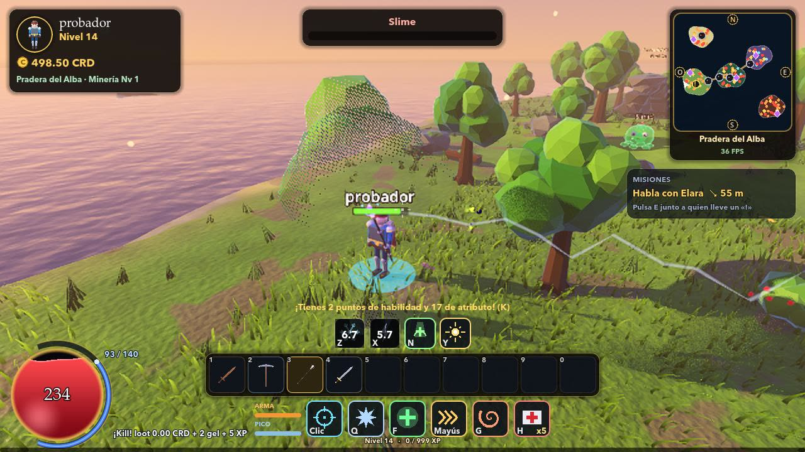
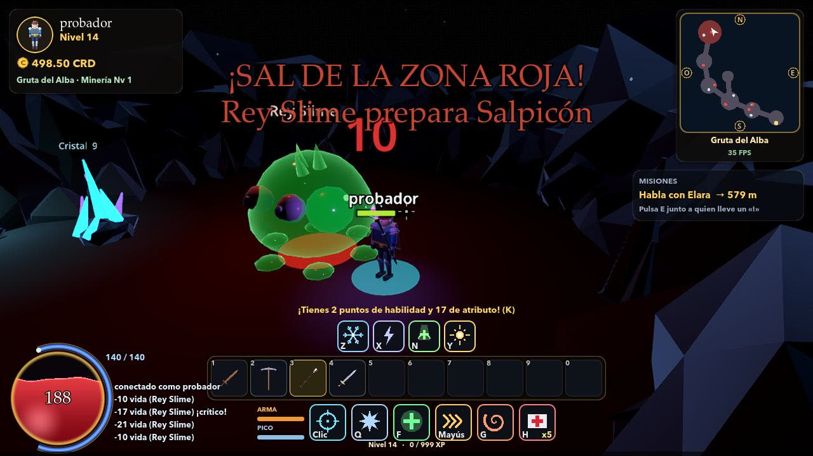
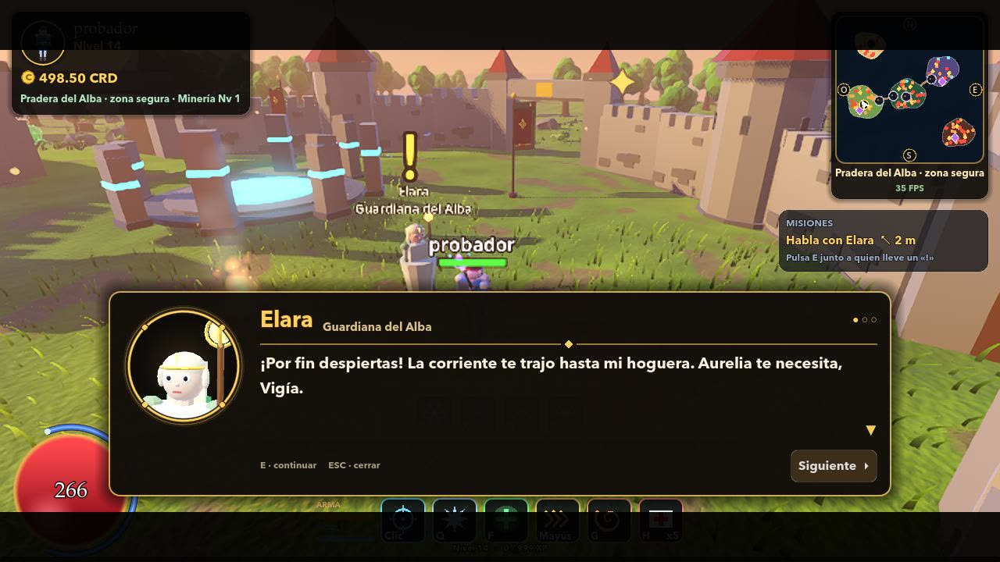
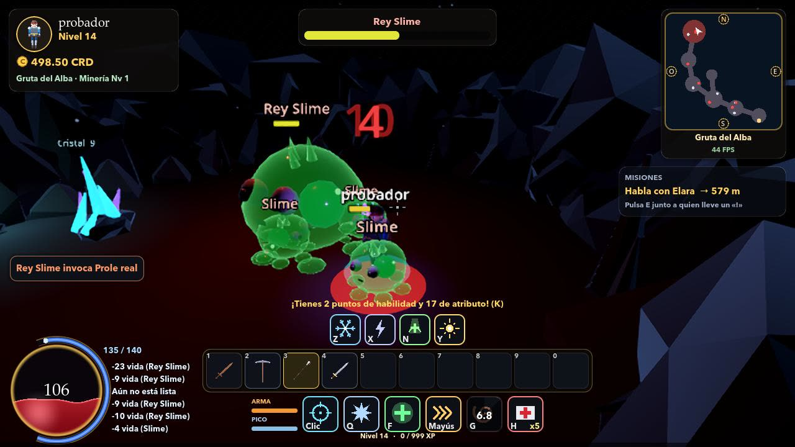
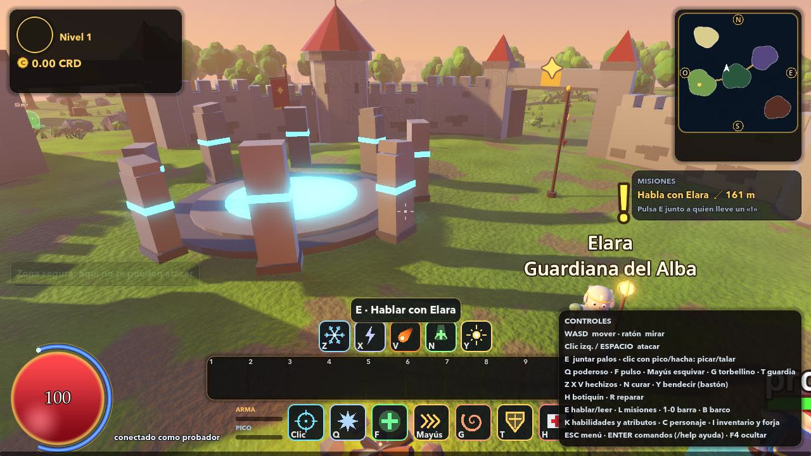

- Jugar solo sin conexión: el mundo corre dentro del juego, sin servidor ni internet, y la partida se guarda en el dispositivo.
- En el celular es la forma de jugar solo por defecto.
Un RPG de aventura en islas encadenadas: lucha contra criaturas y jefes, aprende hechizos, forja tu arma, navega en tu barco y baja a dungeons con amigos. O juega solo, sin conexión, en el celular.
De qué trata
El mundo se quebró y las criaturas volvieron. Empiezas sin nada en la Pradera del Alba: cumples misiones, subes de nivel y te abres paso isla por isla hasta que el mar entero es tuyo.
Espada, bastón arcano y golpes con peso. Esquiva con un impulso y encadena habilidades.
Combate, Supervivencia, Arcano, Apoyo y Recolección. Nova de escarcha, cadena de rayos, meteoro, curaciones y más.
Zonas rojas que hay que esquivar, embestidas, lluvias de cristales, invocaciones y una furia final.
Rejas, placas de presión y un jefe al fondo. Invita a tus amigos y repartan el botín.
Construye tu barco, mejóralo y navega hacia arrecifes, islas lejanas y tormentas.
Pica hierro, plata y cristal. Mejora tu arma de +0 a +10 y encántala con piedras de fuego, escarcha o tormenta.
Capturas del juego





Descargar
El instalador trae todo, también para hostear salas. La versión de doble clic se abre sin instalar nada y sirve para jugar solo o unirte a una sala.
Abre el .dmg y arrastra el juego a Aplicaciones. La primera vez: clic derecho → Abrir.
Instala el APK y permite «instalar apps de origen desconocido». Juega solo sin conexión o únete a la sala de un amigo.
Llega pronto a la App Store, con controles táctiles y juego sin conexión, igual que en Android.
¿Buscas otra versión? Todas están en la lista de versiones. Para jugar en grupo, uno hostea una sala (hasta 6 jugadores) y los demás entran con el código.
Novedades